Downloading the data from NYOpenData
Go tho NYOpenData website by clicking here:
Click here!
Select export and download as a csv
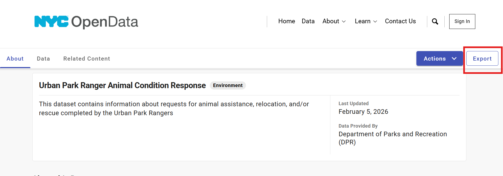
Continue to the next step!
You can scroll down or go back to the list to continue!
Selecting Variables for analysis
Hover over the following paragraph to highlight the variables!
You can select any variable you want out of the dataset! For this analysis I decided to explore the following variables:
Ordinal Variables
- Age
- Year
Nominal Variables
- Animal_condition
- Final_Ranger_Action
Numeric Variables
- Duration of response
- Num_of_Animals
Continue to the next step!
You can scroll down or go back to the list to continue!
Summary Statistics
Analysis in Rstudio
First we need to load our Libraries

Load the dataset!
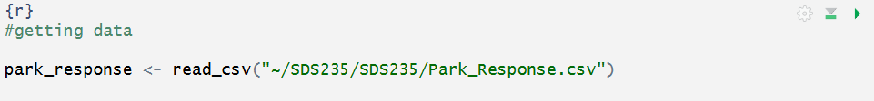
Then after selecting our variables of interest we can use function
Summary() to get full summary statistics of all of the variables
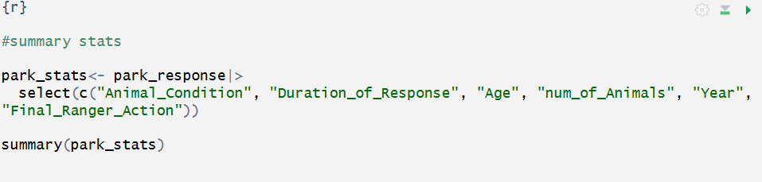
This is what you get!

Continue to the next step!
You can scroll down or go back to the list to continue!
Visualizations
Frequency tables
All the code for the plots can be found in the QMD!!!!
Year Variable
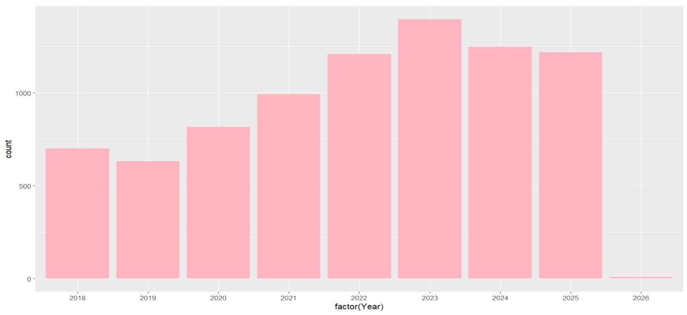
Age Variable
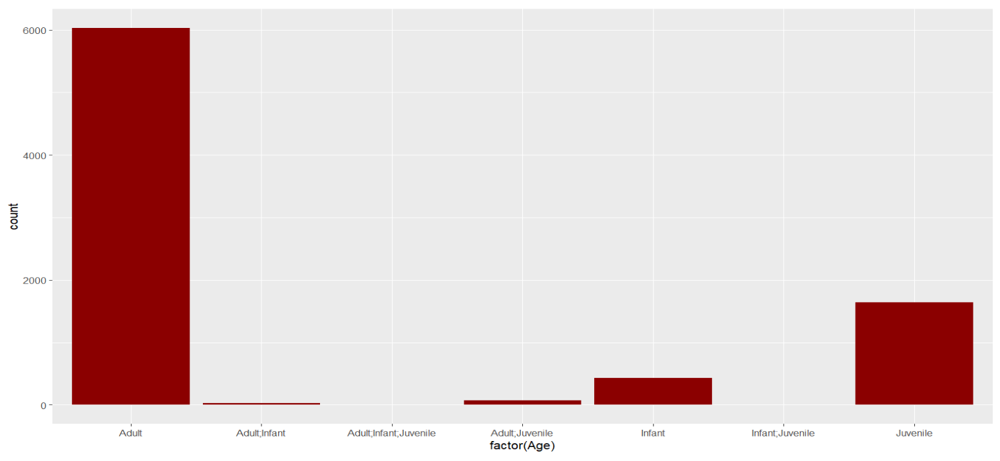
Animal Condition Variable
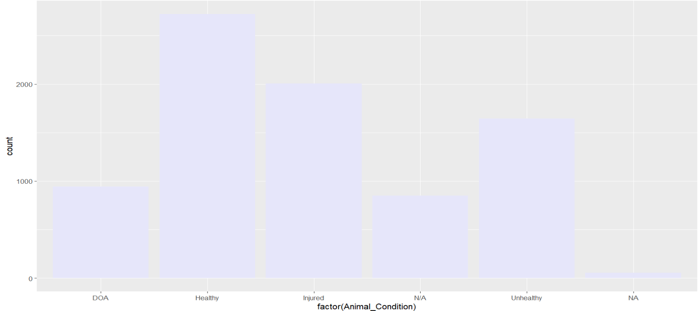
Final Ranger Action Variable
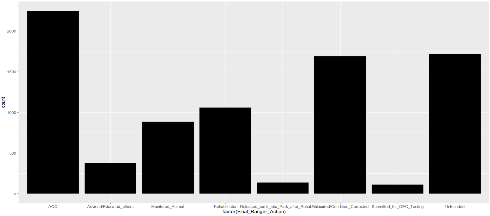
Duration of response Variable
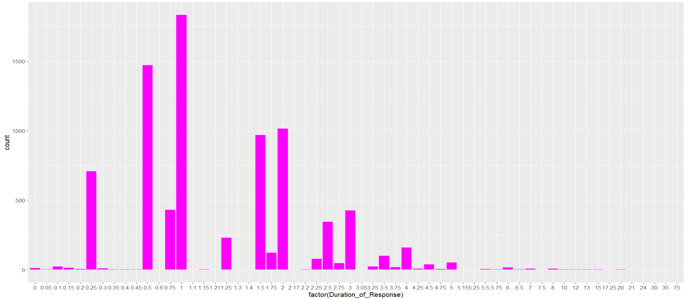
Number of Animals Variable
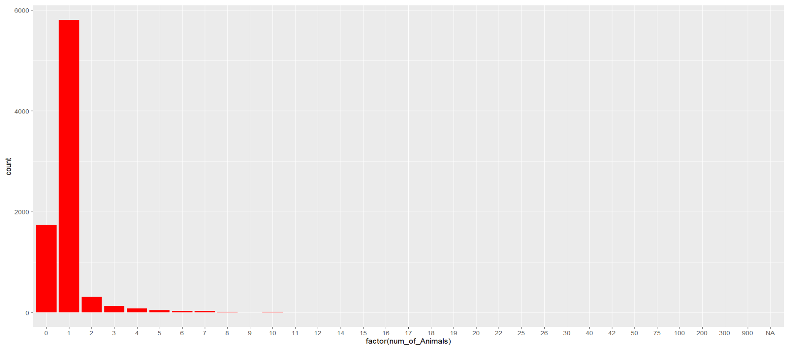
Exploratory visualizations
Duration of response vs Number of animals
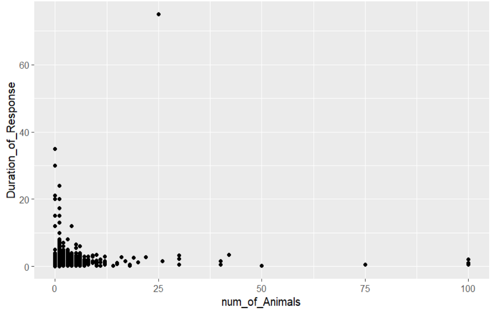
Final range descision across the years
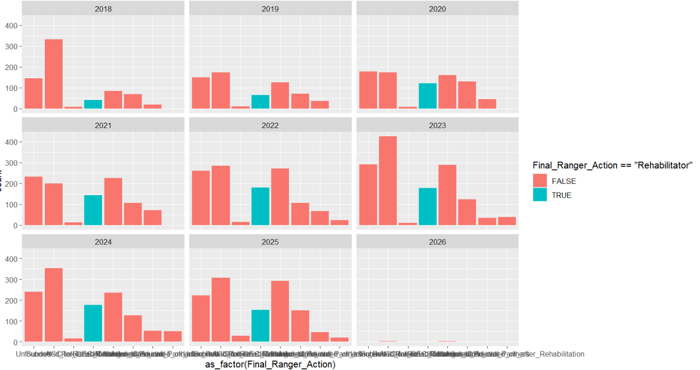
Condition of animals across different ages of animals
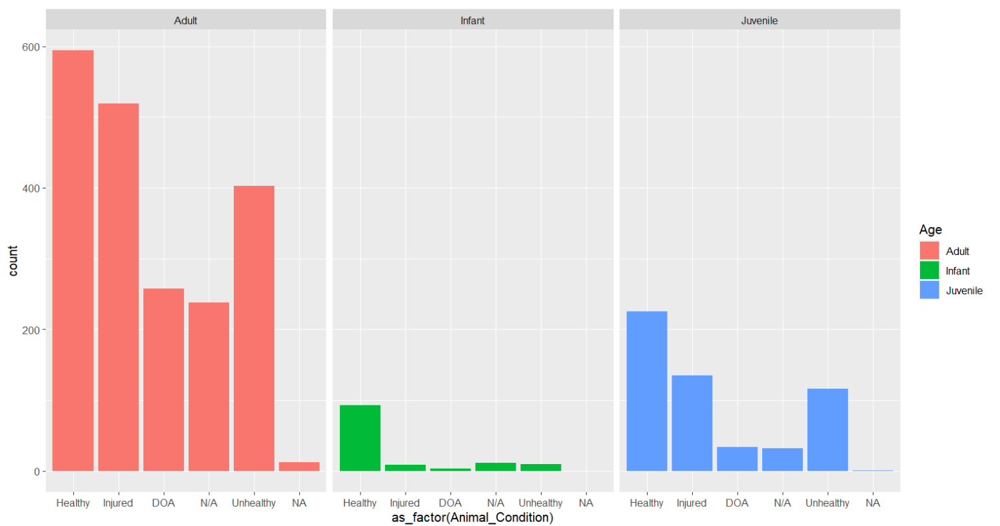
Continue to the next step!
You can scroll down or go back to the list to continue!
Hypothesis (hover over hypothesis1, hypothesis2, and hypothesis3 if you need a reminder of what graph inspired the hypothesis)
Hypothesis1:
- independence: The duration of a call is independent from the number of animals involved in the call.
- non-independence: The duration of a call is not independent from the number of animals involved in the call.
This hypothesis of independence was made because there doesnt seem to be a correlation in the graph.
Hypothesis2:
- Hnull: Number of rehabilitation has not changed across years.
- Ha: Number of rehabilitations have significantly increased since 2018.
This hypothesis was made because there seems to be an increase of rehabilitations after 2018
Hypothesis3:
- Hnull: There is no significant difference between the number of injuries between Adult and infant animals.
- Ha: Adult animals get injured more often than infant animals.
This hypothesis was made because there seems to be a larger number of injuries among adult animals.
Great job!
The job is done! Go back using the back arrow on the top of the website!